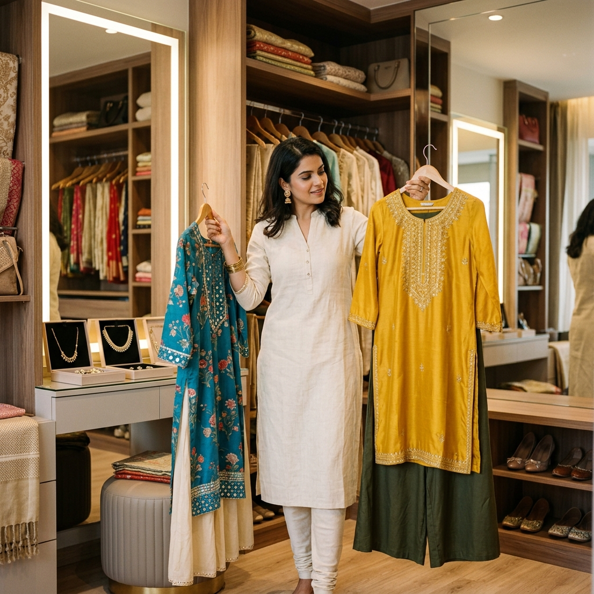

Last updated: July 18, 2026
7 Garment Color Formulas to Mix & Match Indian Clothes You Already Own

The average Indian closet contains over 40 pieces of ethnic clothing — kurtas, palazzo pants, silk dupattas, churidars, saree blouses, and skirts. Yet most women wear less than 20% of their wardrobe regularly.
The reason? We tend to view ethnic wear in rigid, pre-packaged sets. If a mustard yellow kurta was purchased with a matching mustard palazzo and marigold dupatta, we wear them together as a 3-piece set until we tire of the look — and then let the entire set sit unused.
By applying basic color theory formulas to your existing garments, you can unlock 10 to 15 brand-new outfits without spending a single rupee on new clothes.
Here are 7 garment color formulas to restyle the Indian clothes you already own.
Formula 1: The 60-30-10 Ethnic Proportion Rule
In interior design and fashion, the 60-30-10 rule creates visual balance:
- 60% Primary Color: Your main top garment (Kurta, Anarkali, or Saree drape).
- 30% Secondary Color: Your bottom garment (Palazzo, Cigarette Trousers, Skirt).
- 10% Accent Color: Your color anchor (Dupatta, Ethnic Jacket, or Saree Blouse).
How to apply it from your closet: Take a solid deep teal or navy kurta (60%), pair it with a versatile off-white or beige palazzo (30%), and finish with a bright coral or warm gold dupatta (10%). You have instantly transformed a plain daily kurta into an occasion-ready look.
Formula 2: Neutral Foundation + Saturated Jewel Accent
Every ethnic wardrobe has neutral basics — cream palazzos, black cigarette pants, white kurtas, or beige silk skirts.
The Formula: Combine a 100% neutral foundation with a single high-saturation jewel-tone garment.
- Combination A: Plain White Kurta + White Palazzo + Heavy Emerald Green Silk Dupatta
- Combination B: Plain Black Kurta + Black Trousers + Rich Ruby Red Embroidered Jacket
- Combination C: Cream Silk Skirt + Royal Blue Silk Blouse + Neutral Gold Chunni
Because neutrals (white, black, beige, cream) carry zero color hue, the saturated jewel-tone garment draws 100% of the visual attention toward your face.
Formula 3: Complementary Color Blocking (Warm vs Cool Contrast)
Complementary colors sit opposite each other on the color wheel. When paired in ethnic clothing, they create an energetic, eye-catching contrast that looks intentional and high-fashion.
| Kurta / Top Color | Contrasting Bottom / Dupatta Color | Best Skin Undertone |
|---|---|---|
| Mustard Yellow | Royal Blue or Sapphire | Warm / Wheatish |
| Deep Coral / Rust | Peacock Blue or Teal | Warm / Olive |
| Plum / Violet | Warm Olive Green or Pistachio | Cool / Fair to Dusky |
| Magenta / Hot Pink | Forest Green or Emerald | Cool / Wheatish to Dusky |
Pro Tip: To prevent complementary colors from looking jarring, ensure one garment is darker in value than the other (e.g., a bright mustard top with a dark navy bottom, rather than two equally neon shades).
Formula 4: Analogous Tonal Layering (Monochromatic Elegance)
If high-contrast color blocking feels too bold, use analogous color layering — pairing garments that sit side-by-side on the color spectrum.
- Warm Sunset Trio: Peach Kurta + Terracotta Palazzo + Rust Dupatta
- Cool Ocean Trio: Powder Blue Kurta + Sapphire Trousers + Deep Indigo Chunni
- Earthy Royal Trio: Mint Green Kurta + Sage Bottom + Emerald Velvet Jacket
Monochromatic and analogous layering creates an elongated vertical visual line, making the wearer look taller and sleeker.
Formula 5: The "Dupatta Color Bridge" Solution
Have an orphan kurta and a pair of trousers that feel slightly mismatched in undertone (for example, a warm olive green kurta with cool navy blue pants)?
Use a Multi-Tonal Dupatta as a Color Bridge.
Find a printed or Bandhani dupatta that contains both green and blue in its pattern. Wearing this dupatta over the two mismatched items visually bridges the warm and cool colors together, making the combination look purposefully styled rather than randomly thrown on.
Formula 6: Saree Blouse & Lehenga Skirt Swap
Saree blouses are among the most underutilized garments in Indian closets. Instead of wearing your saree blouse exclusively with its matching 6-yard saree:
1. Pair a heavy brocade saree blouse with a solid flared cotton/silk skirt (lehenga style).
2. Wear a high-neck embroidered saree blouse as a crop top over wide-leg palazzo pants and a long sheer jacket.
3. Drape a plain saree with a contrasting printed blouse from a completely different saree set.
Formula 7: Dark Top + Light Bottom (The Contrast Ratio Formula)
If you are unsure whether two colors work together, rely on the Value Contrast Ratio:
- If your kurta is dark & saturated (Navy, Emerald, Plum, Rust), pair it with a light neutral bottom (Off-White, Cream, Beige).
- If your kurta is light & pastel (Powder Blue, Peach, Mint), pair it with a deep rich bottom or dark dupatta.
This guaranteed contrast formula ensures your outfit never looks muddy or washed out.
Frequently Asked Questions
Can I mix warm and cool colors in the same Indian outfit?
Yes! Mixing warm and cool colors (like mustard yellow with royal blue) creates striking contrast. Just ensure the garment closest to your face matches your skin's natural undertone.
How do I know which clothes in my closet can be paired together?
Start by sorting your clothes into solid bases and printed accents. Using a digital wardrobe tool like [Colourity](https://colourity.com) allows you to catalogue your clothes by color profile and auto-generate new pairs automatically.
Want to see how many new outfit combinations are hiding in your closet right now? Discover personal colour analysis and smart wardrobe matching at [Colourity AI](https://colourity.com).